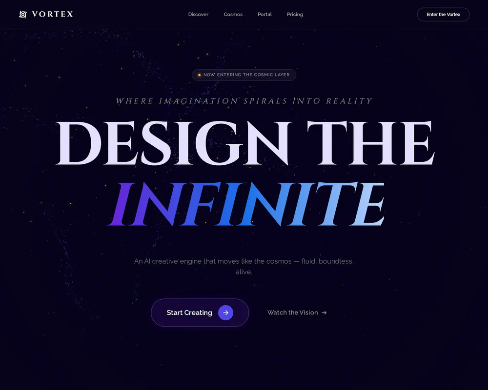
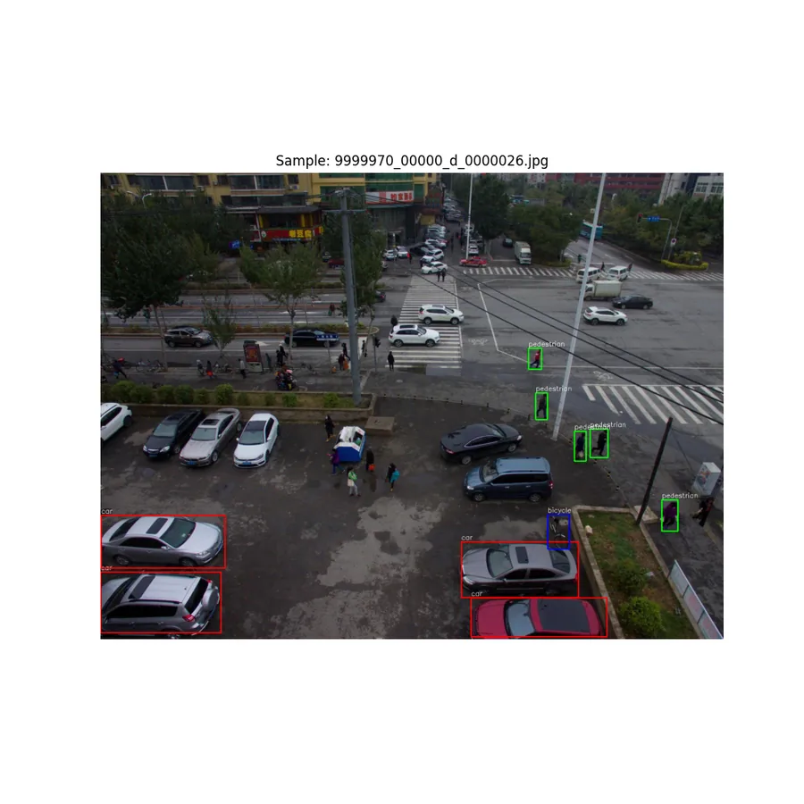

Unified-MediChat
Multi-mode FastAPI health assistant with consultant, therapy, and vision+voice pipelines, backed by RAG, Groq, and ElevenLabs — streamed token-by-token to a Streamlit frontend.
I build data pipelines that turn multi-modal inputs into models people can actually interpret, and I take the same approach into LLM and RAG systems — mostly across healthcare, environmental, and biology projects.
I'm a final-year CSE student working mostly in machine learning, ensemble methods, and explainable AI. Most of my projects are pipelines that take messy, multi-modal data and turn it into models someone other than me can read — and I've started applying the same approach to LLM and RAG systems.
On GitHub I build at the intersection of AI and design: RAG chatbots, a YOLOv8 detection pipeline, and a UI component library. I like the interface side almost as much as the model side.
Most of my work sits in healthcare, environmental, and biology problem sets, and I'm trying to get better at building things that could actually run outside a notebook.
Cleaning and structuring data before training even starts, since that's usually where a model's real problems come from.
Wiring ML and neural network models into actual software instead of leaving them in a notebook.
Reducing high-dimensional data down to something readable enough to actually report or question.
Six projects, each screenshot pulled straight from the repository, and every card links to the source on GitHub.
Multi-mode FastAPI health assistant with consultant, therapy, and vision+voice pipelines, backed by RAG, Groq, and ElevenLabs — streamed token-by-token to a Streamlit frontend.

Natural-language-to-SQL workspace: a validated, single-SELECT query pipeline with schema introspection, auto-charting, and a second LLM pass that writes an analyst-style brief.

AI-powered research assistant that searches arXiv, reads papers, synthesizes findings, and renders a publication-style PDF — stateful LangGraph agent orchestration, not a chatbot wrapper.

Streamlit RAG assistant that answers questions from uploaded PDFs with source traceability — and falls back to live web search when the document isn't enough.

LLM-powered chatbot for dermatology questions and educational guidance on skin conditions — accepts voice descriptions, skin images, and video, then replies in text and speech.

Full-stack search-chat app with a glassmorphic Next.js frontend, FastAPI backend, and LangGraph-driven real-time SSE streaming search with explicit progress stages.
Where the engineering meets the interface — a cinematic UI system, a drone-imagery detection pipeline, and the rest of the public archive.


Computer-vision pipeline for detecting and counting humans and cars in drone imagery, built on YOLOv8n, the VisDrone dataset, and ByteTrack-based tracking.
Projects from the Code Alpha Biotechnology Internship — data analysis and computational techniques.
TypeScript note-taking build, deployed on Vercel.
Live demo ↗TypeScript micro project, deployed on Vercel.
Live demo ↗Front-end build in HTML, deployed on Vercel.
Live demo ↗Restaurant interface design study in HTML, deployed on Vercel.
Live demo ↗TypeScript annotation tooling, open on GitHub.
Developed a scalable framework integrating ensemble learning with conversational AI to produce interpretable, explainable predictions for agricultural waste management.
Designed a multimodal pipeline for continuous observation of physiological and behavioural indicators to detect potential health risks and emergencies in assisted living environments — delivering timely alerts and health insights for caregivers through signal-based ensemble classification across heterogeneous sensor data.
Applied ensemble learning on structured environmental datasets to predict air quality indices, prioritising model generalisation and public interpretability of outputs.
Applied ML architecture to predict protein-site binding from biological sensorgram data, simplifying high-dimensional biological signals into interpretable tabular formats.
Developed an image-specific data retrieval and segmentation pipeline for GPU-scarce environments, converting medical image data into structured formats for diagnostic classification.
BSc in Computer Science and Engineering
A Level & O Level
Edexcel Award · Daily Star AwardIf you're working on an LLM system, a messy data pipeline, or a research idea worth testing, feel free to reach out.